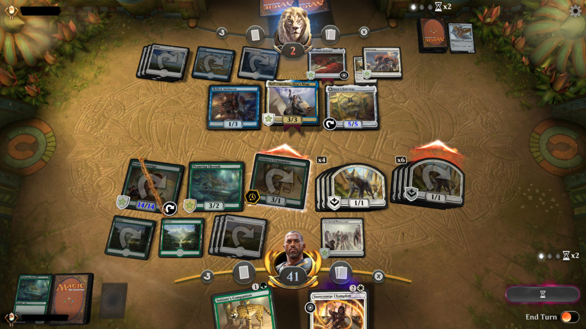

My name is Kwaku Nkansah I recently graduated the University of Maryland with a degree in Information Systems
and looking to leverage my skill-set in a software developer role.
I've had a deep interest in science and technology, and originally I wanted to be a physicist but through learning more in school I found one of my passions in software development.
I have always enjoyed the
problem-solving that comes with coding, it's a discipline where failure and consistent commitment go hand, and hand.
Coding languages:
C++, C, Python, MySQL, Java, JavaScript
Knowledge of Maintaining and Managing Terraria and Minecraft Servers
I enjoy playing video games, building computers, reading manga, watching anime, and playing MTG with my friends.
